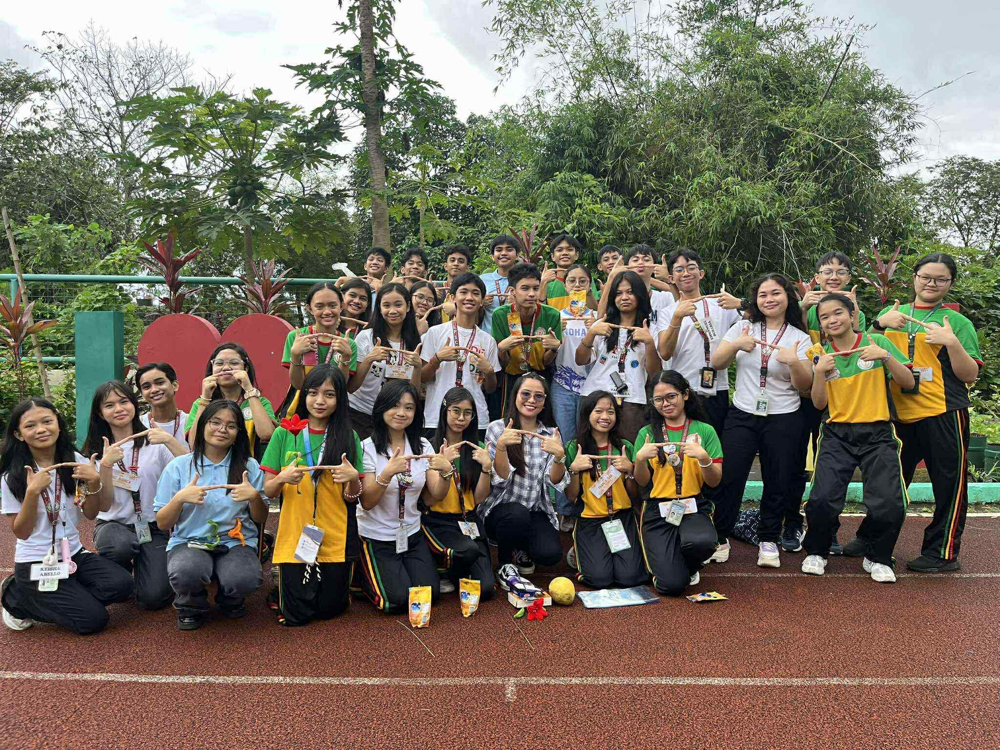
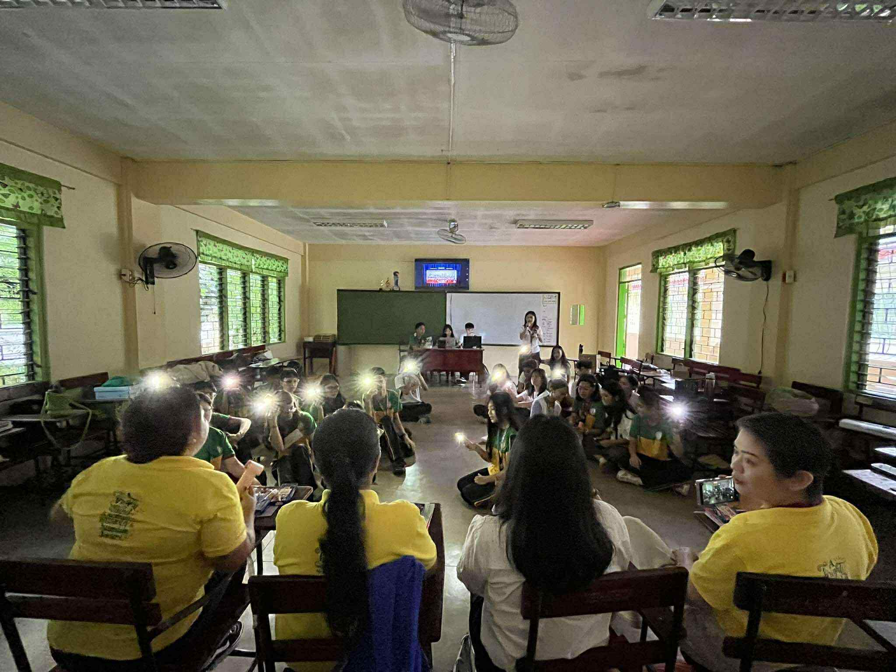

Reflection on Teachers' Day!
What is the most important thing I learned from the event?
During Teachers’ Day, I learned how meaningful it is to take time to appreciate our teachers. They dedicate so much of their time, patience, and effort to help us learn and grow, often going beyond what is required of them. This celebration made me realize that being a teacher is not an easy job. It takes passion, love, and commitment to shape students into better people. I understood that even a simple thank you or small act of gratitude can mean a lot and remind them that their hard work is not forgotten.
How can I apply what I learned in real-life situations?
I can apply what I learned by showing gratitude more often to the people who help and support me, whether they are teachers, friends, or family. Sometimes, we take others’ efforts for granted, but Teachers’ Day reminded me to always appreciate those who guide me. In real life, I can do this by being more respectful, cooperative, and kind. I can also make it a habit to thank people sincerely and give encouragement to others, just like teachers do for us every day.
Did I actively participate in the event? How?
Yes, I actively participated in the Teachers’ Day celebration. I helped in preparing for the program and made sure to contribute to the activities that showed our appreciation for the teachers. I felt really happy seeing their reactions as we celebrated their special day. It was nice to see everyone in our class working together to make the event successful. Being part of the celebration made me feel proud and grateful, knowing that I was able to help make our teachers smile and feel appreciated.
If I were to teach this topic or subject to a classmate, how would I explain it?
If I were to teach this to a classmate, I would explain that Teachers’ Day is not just another school event. It is a time to give back even just a little to the people who give so much for us. Teachers guide us not only in academics but also in life. They help us become responsible, confident, and kind individuals. I would encourage my classmates to always respect their teachers and remember that their effort and patience help shape our future.
Why is it important to have events like this?
Events like Teachers’ Day are important because they remind us of the value of gratitude and respect. They strengthen the bond between students and teachers, creating a more positive and caring school environment. Celebrations like this also help students learn the importance of recognizing the efforts of others. When we honor our teachers, we also learn humility and appreciation. Teachers’ Day teaches us that education is a partnership built on respect, understanding, and kindness, and it reminds us to never take our mentors for granted.

